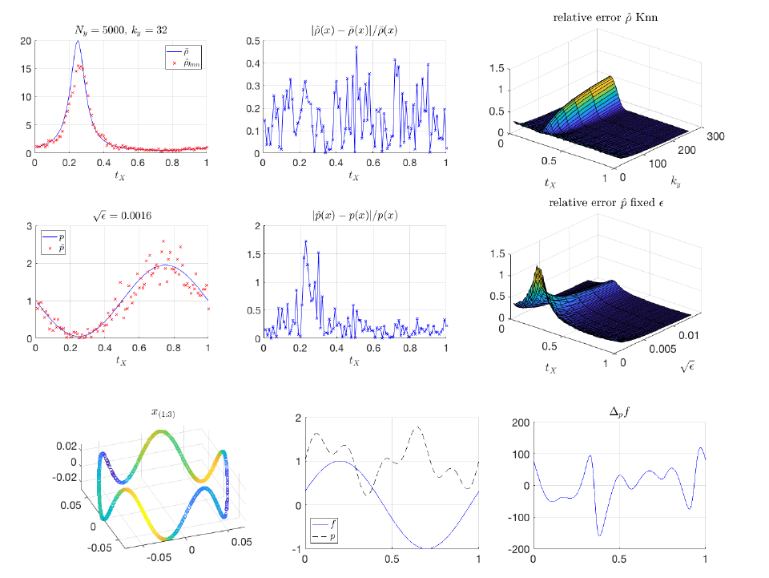
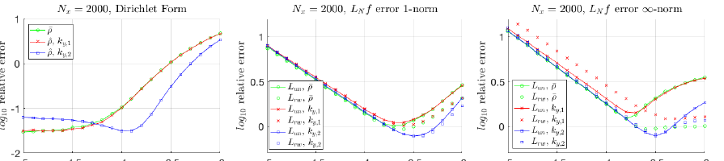
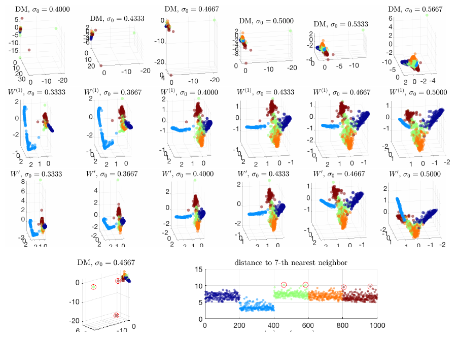

Built 2026-05-15
Cheng and Wu
(2022) gives a theory-backed account of a practical local-scale
kernel construction: choose a bandwidth at each data point from a \(k\)-nearest-neighbor radius, use the
product of endpoint bandwidths in a radial kernel, and ask which
continuum Laplacian the graph approximates. The paper proves uniform
relative consistency of the kNN scale \(\widehat\rho\) for \(\bar\rho=p^{-1/d}\), then uses that result
to prove Dirichlet-form and pointwise graph-Laplacian convergence for a
family of self-tuned kernels indexed by \(\alpha\). Its main relevance for a
conductance/kernel graph Laplacian review is as a rigorous adaptive
local-scale comparator: it explains how self-tuning changes density
bias, variance in low-density regions, and normalization targets. It
should not be read as a description of the current
fit.rdgraph.regression() smoother, whose default
conductance is overlap-density/Riemannian-complex based rather than a
kNN self-tuned kernel conductance.
The self-tuned kernel idea is simple enough to look like a heuristic. If a point lies in a sparse part of the sample, enlarge its bandwidth; if it lies in a dense part, shrink it. In the Zelnik-Manor and Perona construction (Zelnik-Manor and Perona 2004), the bandwidth at \(x_i\) is the distance \(\widehat R_i\) from \(x_i\) to its \(k\)-th nearest neighbor, and the affinity is roughly \[W_{ij}=k_0\!\left(\frac{\|x_i-x_j\|^2}{\widehat R_i\widehat R_j}\right).\] This is attractive in high-dimensional data analysis because a single global bandwidth is rarely appropriate across dense and sparse regions. The mathematical difficulty is that the kNN radius is random, nonsmooth, and not derivative-consistent. A standard variable-bandwidth kernel proof cannot simply assume a smooth bandwidth function and proceed.
Cheng and Wu’s contribution is to show that this practical construction still has a clean continuum interpretation. They prove that the normalized kNN radius is uniformly close in relative error to \(p^{-1/d}\), where \(p\) is the sampling density on a compact smooth \(d\)-dimensional manifold. They then condition on this high-probability event and prove convergence of graph Dirichlet forms, modified random-walk graph Laplacians, and unnormalized graph Laplacians. The paper therefore occupies a useful middle ground between early self-tuning practice and smooth variable-bandwidth diffusion theory: the local scale is actually estimated from samples, not granted as an oracle.
For SIMODS and gflow, the paper is important because it
supplies a principled local-scale kernel comparator. It supports testing
an adaptive kernel-weighted graph energy against the existing smoother,
especially when sample density varies strongly. It does not say that the
existing fit.rdgraph.regression() path is already
implementing such a method. In the current precomputed-graph setting,
weight.list supplies positive edge lengths used for local
ordering and truncation, while the default smoothing conductance is
overlap-density/Riemannian-complex based, approximately \(c_e^\rho=1/\max(\rho_1(e),10^{-10})\) in
the relevant regime. P10 belongs on the comparator side of the design
ledger, not as a reinterpretation of that current overlap-density
behavior.
The paper assumes samples from a smooth compact boundaryless manifold \(M\subset\mathbb{R}^D\), with smooth density \(p\) bounded above and below. A reader should keep three graph objects separate.
First, there is the fixed-bandwidth affinity \[W_{ij}=k_0\!\left(\frac{\|x_i-x_j\|^2}{\epsilon}\right),\] whose continuum limits were already well studied. Second, there is the original self-tuned affinity, where the denominator is \(\widehat R_i\widehat R_j\). Third, Cheng and Wu introduce a family that separates the distance scale from an amplitude normalization: \[W_{ij}^{(\alpha)} = k_0\!\left( \frac{\|x_i-x_j\|^2} {\epsilon\,\widehat\rho(x_i)\widehat\rho(x_j)} \right) \frac{1}{\widehat\rho(x_i)^\alpha\widehat\rho(x_j)^\alpha}.\] The exponent \(\alpha\) controls which density-weighted operator is targeted. The product \(\epsilon\,\widehat\rho(x_i)\widehat\rho(x_j)\) sets the local kernel scale, while the factor \(\widehat\rho(x_i)^{-\alpha}\widehat\rho(x_j)^{-\alpha}\) changes the measure in the limiting Dirichlet form.
The paper deliberately distinguishes the theoretical scale \(\widehat\rho\) from the raw radius used in the algorithm. The normalized estimator is \[\widehat\rho(x) = \widehat R(x) \left(\frac{1}{m_0[h]}\frac{k}{N_y}\right)^{-1/d}, \qquad \widehat R(x) = \inf\left\{r>0: \sum_{j=1}^{N_y}\mathbf{1}_{\{\|y_j-x\|<r\}}\ge k \right\}.\] The stand-alone sample \(Y\) is used to estimate \(\widehat\rho\), while the graph is built on a sample \(X\). This split simplifies the proof by removing some dependence among graph weights. Algorithm 1 uses the raw distances \(\widehat R_i\) and a dimensionless scale \(\sigma_0\), so it does not require the practitioner to know \(d\): \[W_{ij} = k_0\!\left(\frac{\|x_i-x_j\|^2}{\sigma_0^2\widehat R_i\widehat R_j}\right) \frac{1}{\widehat R_i^\alpha\widehat R_j^\alpha}.\] This is the cleanest practical analogue for a SIMODS comparator.
One important terminology caution is that P10 uses kNN distances to estimate bandwidths. That is not the same thing as proving a kNN graph-support rule. Edges are determined by the kernel support, by dense implementation, or by later sparsification. The kNN step supplies local scale; it does not by itself define the support of the graph analyzed in the continuum theorem.
The core statistical fact is the uniform relative consistency of \(\widehat\rho\) for \[\bar\rho=p^{-1/d}.\] At a fixed point, Proposition 2.2 gives the relative error as a bias term plus a variance term, \[\frac{|\widehat\rho(x)-\bar\rho(x)|}{\bar\rho(x)} = O_p\!\left((k/N_y)^{2/d}\right) + O\!\left(\sqrt{\frac{\log N_y}{k}}\right),\] with constants uniform in \(x\). Lemma 2.1 then supplies the geometric regularity needed to pass from fixed-point control to uniform control: \(\widehat R\) is globally Lipschitz, and is smooth away from a finite union of hyperplanes where nearest-neighbor orderings change. Theorem 2.3 combines these facts to prove \[\sup_{x\in M} \frac{|\widehat\rho(x)-\bar\rho(x)|}{\bar\rho(x)} = O_p\!\left((k/N_y)^{2/d}\right) + O\!\left(\sqrt{\frac{\log N_y}{k}}\right)\] with high probability.
The contrast with fixed-bandwidth kernel density estimation is one of the paper’s most useful messages. A KDE estimate of \(p\) has relative variance that worsens like \(p(x)^{-1/2}\) in low-density regions. The kNN radius estimate instead expands the neighborhood until it contains \(k\) points, so its relative variance bound is uniform in \(x\), with no corresponding low-density blowup. That is the mathematical reason self-tuning is useful as more than a numerical convenience.

There is a subtle but crucial warning in Section 2.3. Although \(\widehat\rho\) is uniformly \(C^0\)-consistent, its derivative is not consistent. At differentiability points in the ambient space, \(|\bar\nabla \widehat R|=1\), so \[|\bar\nabla \widehat\rho(x)| = \left(\frac{1}{m_0[h]}\frac{k}{N_y}\right)^{-1/d},\] which diverges as \(k/N_y\to 0\). Consequently, the kNN scale is not \(C^1\)-consistent on the manifold, and the paper cannot simply import a smooth variable-bandwidth proof. The proof strategy is instead to use relative \(C^0\) control to replace \(\widehat\rho\) by \(\bar\rho\) in carefully chosen integral and graph quantities.
For a smooth positive bandwidth \(\rho\), Cheng and Wu define the differential operator \[L_\rho^{(\alpha)} = \Delta +2\frac{\nabla p}{p}\cdot\nabla +(d-2\alpha+2)\frac{\nabla\rho}{\rho}\cdot\nabla .\] Substituting the population scale \(\bar\rho=p^{-1/d}\) gives \[L^{(\alpha)} = \Delta + \left(1+\frac{2(\alpha-1)}{d}\right) \frac{\nabla p}{p}\cdot\nabla .\] Thus \(\alpha\) is not a harmless tuning knob. It determines the density drift in the continuum limit. In the Dirichlet-form language, the target measure has density \[p_\alpha=p^{1+2(\alpha-1)/d}.\] The special cases are especially useful for comparator design. When \(\alpha=1\), \(p_\alpha=p\), and the limiting operator is the weighted Laplacian \(\Delta_p\). When \(\alpha=0\), the construction is closest to the original unnormalized self-tuned affinity and targets a modified density \(p^{1-2/d}\). When \(\alpha=1-d/2\), \(p_\alpha\) is constant, so the Dirichlet-form target and the modified random-walk limiting operator recover the Laplace–Beltrami geometry. The qualifier matters: the unnormalized pointwise operator in Theorem 3.6 includes an additional density prefactor \[p^{2(\alpha-1)/d}L^{(\alpha)}f.\] Therefore it is imprecise to say that every graph operator recovers \(\Delta_M\) at \(\alpha=1-d/2\) without also naming the normalization.
The paper analyzes two graph-Laplacian actions. The unnormalized
operator is the scaled sample average associated with \(D-W\). The modified random-walk operator is
a row-normalized average with an additional \(\widehat\rho(x)^{-2}\) factor; in matrix
terms it differs from the usual \(I-D^{-1}W\) random-walk Laplacian by this
local-scale diagonal correction and by constants/sign. This distinction
is relevant for gflow: a smoothing penalty \(f^T L f\) is closer in spirit to the
Dirichlet-form result than to a pointwise random-walk generator, while a
diffusion or embedding comparator would need to specify exactly which
normalization is being used.
The cleanest convergence theorem for smoothing is the graph Dirichlet-form result. The graph form is \[E_N(f,f) = \frac{1}{\epsilon m_2 N^2} \sum_{i,j} \epsilon^{-d/2}W_{ij}(f_i-f_j)^2,\] up to the paper’s equivalent \(f^T(D-W)f\) normalization. Theorem 3.3 shows that, if \(\epsilon\to 0\), \(N\epsilon^{d/2}\) is large enough, and \(\epsilon_\rho\to 0\), then \[E_N(f,f) = E_{p_\alpha}(f,f)(1+O(\epsilon_\rho)) +O(\epsilon) +\hbox{sampling error}.\] The important point is that the error from estimating \(\rho\) enters as \(O(\epsilon_\rho)\). The quadratic form absorbs the roughness of the kNN scale better than the pointwise operator does.
Pointwise operator convergence is stricter. The modified random-walk theorem and the unnormalized theorem require \(\epsilon_\rho=o(\epsilon)\), and their errors include an \(\epsilon_\rho/\epsilon\) term. This is not a minor proof artifact; it reflects the fact that pointwise graph Laplacian estimates are sensitive to local oscillation. The paper’s weak convergence theorem for the unnormalized operator removes this \(\epsilon_\rho/\epsilon\) penalty by testing against a smooth \(\phi\), returning to a form-like statement.

This distinction should guide how the paper is reused. If SIMODS is comparing graph smoothness penalties, Theorem 3.3 is the closest theoretical analogue. If SIMODS is comparing diffusion operators, embeddings, or local residual operators, Theorems 3.5 and 3.6 are more relevant, but they demand stronger scale-estimation accuracy and more careful normalization choices.
The fixed-bandwidth comparison is not just a sidebar. Cheng and Wu compare their self-tuned family with fixed-bandwidth kernels normalized by an estimated density \(\widehat p^\beta\). The fixed-bandwidth pointwise variance term has a factor \(p(x)^{-1/2}\). The self-tuned variance term has the favorable factor \(p(x)^{1/d}\) in the corresponding theorem. In words: low-density regions are exactly where fixed bandwidths are most fragile, and exactly where self-tuned bandwidths expand.
This density robustness is the main reason P10 belongs in a SIMODS/gflow comparator suite. A global RBF kernel comparator can be informative, but it has a known failure mode when the graph samples sparse and dense regions simultaneously. A P10-style comparator would use local radii to reduce that failure mode. The relevant design degrees of freedom are \(k\), \(\sigma_0\), \(\alpha\), the choice between dense kernel support and sparsification, and the choice between Dirichlet-form and random-walk normalization. Reporting all five choices is essential, because they determine both the finite-sample graph and the continuum operator being approximated.
The paper’s experiments support this reading. Figures 4–6 show the practical tradeoff among \(\epsilon\), \(k_y\), and whether the radius is estimated from a stand-alone \(Y\) or from \(X\) itself. A large stand-alone \(Y\) can reduce bandwidth-estimation error, but with a limited total sample budget, splitting data can worsen performance by reducing the graph sample size. This is useful for implementation planning: the stand-alone split is a proof device and a possible large-data strategy, not a universal prescription.
The paper also demonstrates the self-tuned kernel on eigenfunction recovery for \(S^1\) and on MNIST digit embeddings. These figures are useful but should be cited with discipline. They are empirical evidence that self-tuned kernels can stabilize embeddings across local density variation; they are not a spectral-convergence theorem.

Figure 8 shows that fixed-bandwidth diffusion-map embeddings can be unstable at smaller scales, while self-tuned kernels remain informative over a wider range of \(\sigma_0\). Figure 9 identifies the fixed-bandwidth outliers as points with large seventh-nearest-neighbor distances. This aligns with the theory’s variance story: fixed bandwidths struggle with relatively isolated points, while adaptive local scales compensate. Still, the paper does not prove spectral convergence of those MNIST embeddings, nor does it prove that every self-tuned graph embedding is robust.
gflowP10 should be used as a source for a new local-scale kernel comparator with a clear continuum target. A faithful comparator would compute a local radius \(\widehat R_i\) from graph or ambient distances, choose a dimensionless \(\sigma_0\), choose an \(\alpha\), and set an affinity/conductance resembling \[c_{ij}^{\mathrm{P10}} = k_0\!\left(\frac{d_{ij}^2}{\sigma_0^2\widehat R_i\widehat R_j}\right) \frac{1}{\widehat R_i^\alpha\widehat R_j^\alpha},\] with the caveat that P10’s theorem is written for samples on a smooth manifold with Euclidean ambient distances. Translating to a graph or Riemannian-complex setting is a derived design step, not a theorem already in the paper.
The most conservative default for a smoothing comparator is \(\alpha=1\), because it targets \(\Delta_p\) and \(E_p\), matching a density-weighted
smoothness interpretation. If the target is closer to geometry with
uniform volume, \(\alpha=1-d/2\) or the
mixed \(\widehat\rho,\widehat p\)
normalization in the paper’s Equation (21) becomes relevant, but then
intrinsic dimension or density estimation choices must be surfaced. For
gflow, \(\alpha\) should
be an explicit parameter rather than hidden in the conductance
formula.
The strongest transfer point is the low-density variance comparison. If the current overlap-density smoother and a P10-style adaptive kernel smoother behave differently near sparse regions, P10 predicts why: the adaptive kernel is designed to increase local averaging scale where sample density is low. That is a reason to include the comparator. It is not evidence that the overlap-density smoother is wrong, nor evidence that inverse-length conductance and self-tuned kernel conductance are equivalent. They encode different notions of local geometry.
The review should reuse four elements from P10. First, use the normalized kNN radius story to explain adaptive local scale: \(\widehat R_i\) estimates a multiple of \(p(x_i)^{-1/d}\), so sparse regions get larger bandwidths. Second, use \(\alpha\) to keep operator targets explicit. Third, use Dirichlet-form convergence as the closest theoretical support for graph smoothing penalties. Fourth, use the fixed-versus-self-tuned variance comparison to motivate adaptive-kernel comparators under nonuniform sampling.
The review should avoid three overextensions. Do not cite P10 as a proof of the current SIMODS overlap-density conductance. Do not describe the kNN radius as a kNN graph-support theorem. Do not claim spectral convergence from the MNIST or \(S^1\) figures. P10 is strongest as a mathematically careful bridge from self-tuned spectral-clustering practice to continuum graph-Laplacian limits.
Primary source: the local canonical P10 PDF. Archival scaffolding:
the P10 Markdown memo and audit. Figure screenshots: internal-review
captures listed in the shared figure manifest, with included paths of
the form ../../paper_figures/.... This review follows the
shared LaTeX style file and keeps the current
fit.rdgraph.regression() overlap-density smoother separate
from the planned P10 adaptive local-scale comparator.